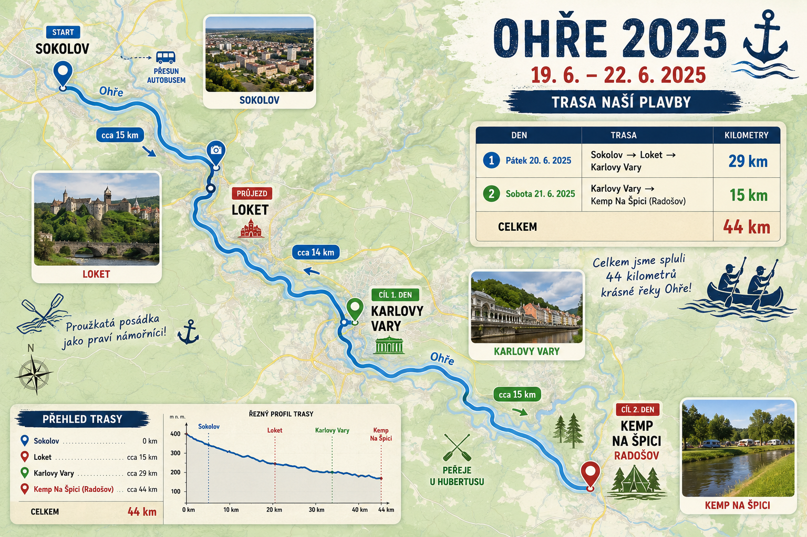

19.–22. června 2025
Již minulý rok jsme se shodli, že chceme konečně vidět Loket z vodní hladiny, a tak byl plán pro rok 2025 jasný – vracíme se na Ohři!
A kde jinde se ubytovat než v našem osvědčeném zázemí, v kempu Na Špici. Letos se k naší posádce navíc přidala další parta známých – GUMÍKOJC, takže bylo od začátku jasné, že o zábavu nebude nouze.
V pátek jsme se autobusovou dopravou přesunuli do Sokolova, kde jsme si vyzvedli naše plavidla a vypluli směrem na Loket. Naši háčkové byli skvělí, námořnická trička nám slušela a cíl vidět Loket z hladiny byl splněn!
Nejvíce jsme se těšili na Hubertus – peřeje a legendární „ogriluj si sám“. Naši nejstarší háčkové navíc zvládli plavbu na kánoi úplně sami. 🚣♂️👏
Před odjezdem jsme v Kyselce ochutnali Mattoniho pramen a pak už zamířili zpět do Třemošné. Ohře byla opět úžasná.

| Den | Trasa | Km |
|---|---|---|
| Pátek | Sokolov → Loket → Karlovy Vary | 29 km |
| Sobota | Karlovy Vary → Radošov | 15 km |
| Celkem | 44 km |